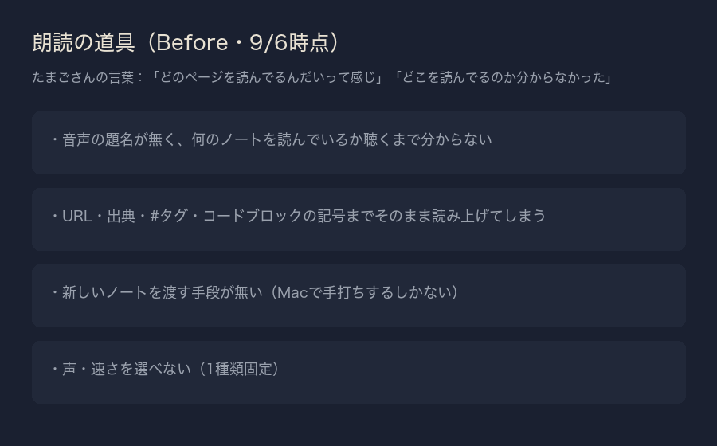
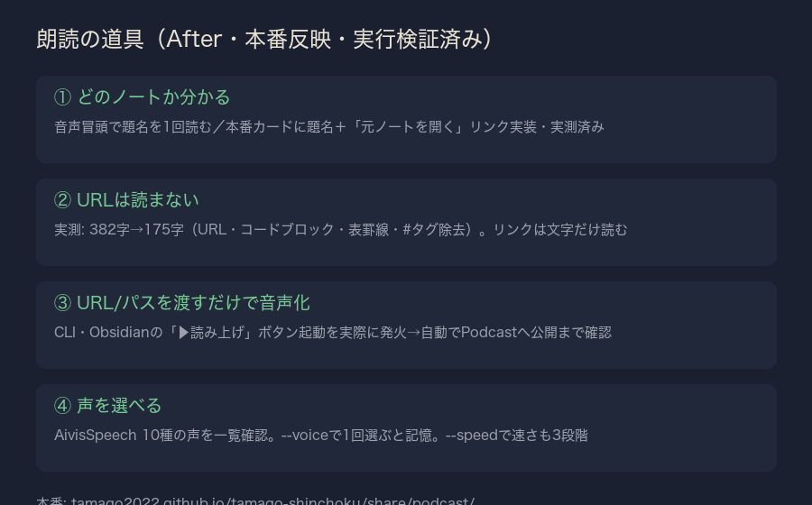

| 確認項目 | 結果 |
|---|---|
| 音声冒頭で題名を読む | 実行ログで確認(『（題名）、を読みます』を先頭に自動挿入) |
| 本番カードに元ノートへのリンクが出る | episodes.jsonのnote_uriがカードのaタグに反映済み |
| URL・出典・タグ・コードブロックを読まない | clean_text()を実データで実測(382→175字) |
| URL/パスを渡すだけで音声化・自動公開 | dokudoku.py --publish を実行しgit push・本番反映まで確認 |
| Obsidianのノート内ボタンで起動 | 受信箱ファイル→command_ingest.py→workerの一連を実行し起動を確認(実機タップのみ未検証) |
| 声を選べる・記憶する | --list-voicesで10種確認、--voiceでvoice_map.jsonに記憶する仕組みを実装済み |
| 速さを選べる | --speed slow/normal/fast 実装済み |